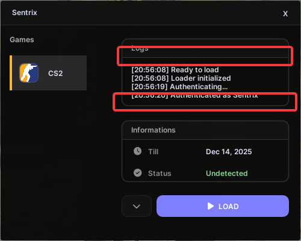
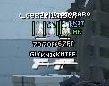
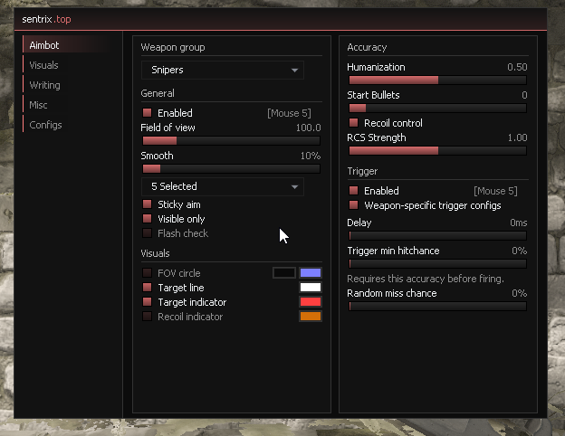
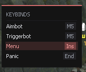

Sentrix
1. Introduction
These are my initial thoughts and opinions on Sentrix.
Note: These are my opinions and are subjective to change as I grown into the cheat more, I've only had a short time to test so far but these are my main concerns or issues.
2. Loader
Here are my first impressions of the loader:
- The animations are smooth and give it a clean, polished feel.
- The color theme is minimalistic and modern very well chosen.
However, the spacing between widgets isn't consistent, which gives the interface a slightly unfinished or unplanned appearance.

3. CS2 Cheat
These are my early thoughts on the main software itself:
- The HUD designs are well-made and visually appealing.
- The triggerbot correctly avoids shooting through smokes, though the aimbot will still attempt to aim through them.
- Occasionally, the triggerbot fails to fire even when the delay is set to 0 and the crosshair is clearly over a hitbox. This usually happens when the triggerbot key is held before the target becomes visible.
- The aimbot FOV circle is quite thick consider adding toggles for the outline and line width.
- The aimbot's smoothing feels too low, making its usage appear obvious to spectators.
- For security reasons, you might implement logic so the aimbot only corrects aim if the deviation exceeds a certain threshold from the current view vector.
- The ESP looks clean overall, but some of the sliders for width, height, or size don't seem to have any effect.
- Personally, I don't think GUI or panic keybinds should appear on the keybind list adding an option to filter which keybinds are displayed would be a good improvement.
- I suspect the aimbot uses constant smoothing, which isn't ideal for either realism or security.
- The triggerbot lacks a visible hitbox configuration, so it's unclear what conditions trigger it to shoot.
I also think the ESP player name should have the same outline as the weapon name. Depending on the font, the player name can be hard to read without it.

4. Theme
The theme is sleek and minimalistic overall, though some inconsistencies stand out and could be improved.
Here's an example of what I mean:


Why not unify these designs under a single theme? The separation feels unnecessary and inconsistent.
5. Suggested features
- A "safe mode" that disables all cheats except for basic visual enhancements like ESP and radar.
- An option to toggle between different aimbot smoothing algorithms, such as linear, exponential, or adaptive smoothing based on target movement.
- A UI option for votes on enemy team.
- A UI option for team damage, for griefing.
- Web Radar, hosted on the cheats back-end server for the user.
- More comprehensive keybind management, allowing users to categorize and filter keybinds displayed in the list. For example, only display enabled/held binds.
6. Conclusion
Overall, Sentrix shows great potential with its clean design and solid features. With some refinements and additional options, it could become a top choice for users seeking both functionality and aesthetics.
Date: 13/11/2025 (dd/mm/yyyy)
Edit: 13/11/2025 - Added more suggestions